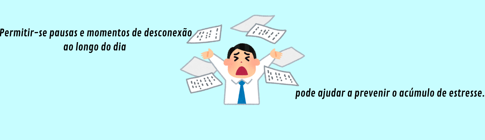
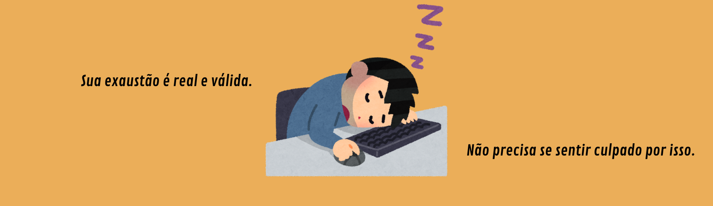

O que é Burnout?
O burnout é um estado de exaustão emocional, física e mental causado por estresse prolongado e excessivo. É frequentemente associado ao ambiente de trabalho, onde a pressão constante, a carga de trabalho elevada e a falta de apoio podem levar a esse esgotamento. Os sintomas incluem cansaço extremo, desmotivação, irritabilidade e problemas de saúde física. Reconhecer os sinais precoces é fundamental para evitar que o burnout se torne uma condição crônica.
Causas
As causas do burnout incluem excesso de trabalho, falta de controle sobre as tarefas, expectativas irreais por parte de empregadores ou de si mesmo, ambiente de trabalho tóxico, falta de reconhecimento e desequilíbrio entre vida pessoal e profissional. Além disso, a ausência de suporte social e a pressão constante para atingir metas também podem contribuir significativamente. Esses fatores, quando combinados, criam um ambiente propício para o desenvolvimento do burnout, afetando tanto a saúde mental quanto física.
Sintomas
Os sintomas incluem cansaço extremo que não melhora com descanso, falta de motivação para realizar tarefas, irritabilidade constante, dificuldade de concentração, sensação de fracasso ou insegurança, insônia persistente e problemas físicos como dores de cabeça, problemas gastrointestinais e alterações no apetite. Em casos mais graves, pode levar a isolamento social e depressão. Reconhecer esses sintomas é crucial para buscar ajuda e evitar que a condição se agrave.
Prevenção
Para prevenir o burnout, é essencial estabelecer limites claros entre trabalho e vida pessoal, praticar atividades de autocuidado como exercícios físicos e meditação, buscar apoio de amigos, familiares ou colegas, gerenciar o tempo de forma eficaz e criar um ambiente de trabalho saudável. Além disso, aprender a delegar tarefas e dizer "não" quando necessário pode ajudar a reduzir a sobrecarga. A prevenção é uma estratégia poderosa para manter o equilíbrio e evitar o impacto negativo do burnout.